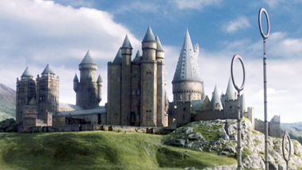
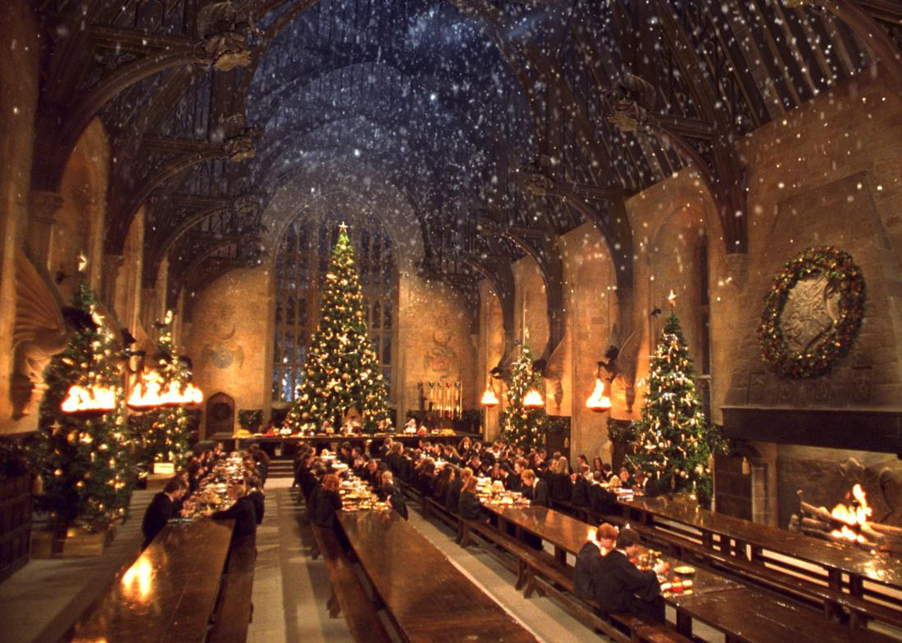

Page about the book

By Gene Openshaw
Harry's story is set in a magical, largely fictional Britain, but you can visit many real locations used in the film series. Other settings, like Diagon Alley, exist only at Leavesden Film Studios (20 miles north of London). Many of the filming sites are closed to visitors, though, or are an un-magical disappointment in person, unless you're a huge fan. For those diehards, here's a sampling.
Spoiler Alert: The information below will ruin surprises for the three of you who haven't yet read or seen the Harry Potter series.
London
Harry's story begins in suburban London, in the fictional town of Little Whinging. In the first film, The Sorcerer's Stone (2001), the gentle giant Hagrid touches down on his flying motorcycle at #4 Privet Drive. There, baby Harry — who was orphaned by the murder of his wizard parents — is left on the doorstep to be raised by an anti-magic aunt and uncle. The scene was shot in the town of Bracknell (pop. 50,000, 10 miles west of Heathrow) on a street of generic brick rowhouses called Picket Close. Later, 10-year-old Harry first realizes his wizard powers when talking with a boa constrictor, filmed at the London Zoo's Reptile House in Regent's Park (Tube: Great Portland Street). Harry soon gets invited to Hogwarts School of Witchcraft and Wizardry, where he'll learn the magical skills he'll need to eventually confront his parents' murderer, Lord Voldemort.
Big Ben and Parliament, along the Thames, welcome Harry to the modern city inhabited by Muggles (nonmagic folk). London bustles along oblivious to the parallel universe of wizards. Hagrid takes Harry shopping for school supplies. They enter the glass-roofed Leadenhall Market (Tube: Bank) and approach the storefront at 42 Bull's Head Passage — the entrance to The Leaky Cauldron pub (which, in the books, is placed among the bookshops of Charing Cross Road). The pub's back wall parts, opening onto the magical Diagon Alley, where Harry shops for wands, cauldrons, and wizard textbooks. He pays for them with gold Galleons from goblin-run Gringotts Wizarding Bank, filmed in the marble-floored and chandeliered Exhibition Hall of Australia House (Tube: Temple), home of the Australian Embassy.
Harry catches the train to Hogwarts at King's Cross Station. (The fanciful exterior shot in The Chamber of Secrets (2002) is actually nearby St. Pancras International Station.) Inside the glass-roofed train station, on a pedestrian sky bridge over the tracks, Hagrid gives Harry a train ticket. Harry heads to platform 9¾, where he and his new buddy Ron magically push their luggage carts through a brick pillar between the platforms, emerging onto a hidden platform. (For a fun photo-op, head to King's Cross Station's track 9 to find the Platform 9 ¾ sign, the luggage cart that looks like it's disappearing into the wall, a Harry Potter gift shop...and a 30-minute wait in line for the photo itself.)
A red steam train — the Hogwarts Express — speeds the boys through the (Scottish) countryside to Hogwarts, where Harry will spend the next seven years. (The steam engine used in filming is on display at a Platform 9¾ exhibit at the Harry Potter Warner Bros. Studio Tour.) Harry is taught how to wave his wand by tiny Professor Flitwick in a wood-paneled classroom filmed at Harrow School in Harrow on the Hill, eight miles northwest of London (Tube: Harrow on the Hill).

In The Prisoner of Azkaban (2004), Harry careens through London's lamp-lit streets on a purple three-decker bus (also on display at the studio tour) that dumps him at The Leaky Cauldron pub. In this film, the pub's exterior was shot on rough-looking Stoney Street at the southeast edge of Borough Street Market, by The Market Porter pub, with trains rumbling overhead (Tube: London Bridge).
In The Order of the Phoenix (2007), the Order takes to the night sky on broomsticks, zooming down the Thames and over London, passing over plenty of identifiable landmarks, including the Tower Bridge, London Eye, Big Ben, and Buckingham Palace. They arrive at Sirius Black's home at "Twelve Grimmauld Place," filmed at a park-like square called Lincoln's Inn Fields, near Sir John Soane's Museum (Tube: Holborn).
The Millennium Bridge is attacked by Death Eaters and collapses into the Thames in the dramatic finale to The Half-Blood Prince (2009).
For Order of the Phoenix (2007) and the first Deathly Hallows (2010), the real government offices of Whitehall serve as exteriors for the Ministry of Magic. Also for the first Deathly Hallows, Harry, Ron, and Hermione fight off disguised Death Eaters in a Muggle café, filmed in the West End's bustling Piccadilly Circus.
And cinema buffs can visit Leicester Square, where Daniel Radcliffe and other stars have strolled past paparazzi and down red carpets to the Odeon Theater to attend the movies' premieres.
Near Bath
Many scenes showing the mysterious side of Hogwarts were filmed in the elaborate, fan-vaulted corridors of the Gloucester Cathedral cloisters, 50 miles north of Bath. In The Sorcerer's Stone, when Harry and Ron set out to save Hermione, they look down a long, dark Gloucester hallway and spot a 20-foot troll at the far end.
In The Sorcerer's Stone, Harry is chosen for Gryffindor's Quidditch team in the halls of the 13th-century Lacock Abbey, 13 miles east of Bath. Harry attends Professor Snape's class in one of the Abbey's peeling-plaster rooms — appropriate to Snape's temperament. (You can visit with recommended Mad Max Tours.)
Outdoor scenes from the first Deathly Hallows, in which Harry, Ron, and Hermione take refuge in the woods, were filmed in the Swinley Forest area of Windsor's Great Park.
Oxford
Hogwarts, Harry's prestigious wizarding prep school, is a composite of several locations, many of them real places in Oxford.
Christ Church College inspired two film sets familiar to Potter fans. In The Sorcerer's Stone, the kids are ferried to Hogwarts and then ascend a stone staircase — the same one that, in real life, leads into the Christ Church College's Great Hall. Christ Church's high-ceilinged dining hall was a model for the one seen throughout the films (with the weightless candles and flaming braziers)...but the actual filming happened on a set at the Leavesden studios.
Later in The Sorcerer's Stone, Harry sneaks into the restricted book section of Hogwarts Library under a cloak of invisibility. This scene was filmed inside Oxford's Duke Humfrey's Library. Hermione reads about the Sorcerer's Stone here, too.
At the end of The Sorcerer's Stone, Harry awakens in the Hogwarts infirmary, filmed in the big-windowed Divinity School, on the ground floor of the Bodleian Library; Ron also recuperates here after being poisoned in The Half-Blood Prince. In The Goblet of Fire (2005), Mad-Eye Moody turns Draco into a ferret in the New College cloister.
Durham and Northeast England
In The Sorcerer's Stone, Harry walks with his white owl, Hedwig, through a snowy cloister courtyard located in Durham Cathedral.
Harry first learns to fly a broomstick on the green grass of Hogwarts' school grounds, filmed inside the walls of Alnwick Castle, located 30 miles from Newcastle. In The Chamber of Secrets, this is where the Weasleys' flying car crashes into the Whomping Willow.
Southeast England
In the second Deathly Hallows (2011), the pivotal scene at Lily and James Potter's home in Godric's Hollow — when Harry becomes the "Boy Who Lived" — was shot in the medieval town of Lavenham, Suffolk, about 75 miles northeast of London.
Northwest England
Harry and Hagrid speed through Liverpool's Queensway Tunnel on Sirius Black's flying motorcycle in Deathly Hallows: Part I, as they flee a pack of eager Death Eaters.
Wales
Shell Cottage, home of Bill Weasley and Fleur Delacour and a hideout for other characters, appears in both Deathly Hallows movies. The cottage temporarily sat on Freshwater West beach in the southwestern region of Pembrokeshire. It's the same beach where Harry, Ron, and Hermione wash up after leaping off the back of a dragon in Part II.
Scotland
Many of the movies' exterior shots — especially scenes of the Hogwarts grounds — were filmed in craggy, cloudy, mysterious Scotland (much of it in the Fort William and Glencoe areas).
The Hogwarts Express train that carries Harry, Ron, and Hermione to school each year was filmed along an actual steam-train line that runs between Fort William and Mallaig (tourists can ride this Jacobite Steam Train). The movies show the train chugging across the real-life Glenfinnan Viaduct, where, in The Goblet of Fire, the Dementors stall the train and torture Harry. A train bridge opposite Loch Shiel near Fort William popped up inThe Chamber of Secrets and was used again when the Dementor boarded the train in The Prisoner of Azkaban.
Also in The Prisoner of Azkaban, Hogwarts Lake was filmed using Loch Shiel, Loch Eilt, and Loch Morar near Fort William, and Hagrid skips stones across the water at Loch Eilt. Steal Falls, a waterfall at the base of Ben Nevis, is the locale for Harry's battle with a dragon for the Triwizard Tournament in The Goblet of Fire.
Other scenes filmed in the Highlands include a desolate hillside with Hagrid's stone hut in Glencoe, which was the main location for outdoor filming in The Prisoner of Azkaban. Exterior scenes for The Half-Blood Prince were filmed in Glencoe as well as in the small village of Glenfinnan.